2026
con todo el cariño del mundo, desde lejos.
Papá. Son las diez de la noche y estoy sentado en mi pieza en Barcelona. Hay ruido de calle por la ventana, ese ruido de siempre: autos, gente, el murmullo que ya me es algo familiar pero que todavía no siento del todo mío. Y por alguna razón, pensé en ti, tu cumpleaños es en una semana y creo que es un buen momento de contarte algunas cosas. O en verdad, me di cuenta de que había cosas que quería decirte desde hace mucho tiempo, cosas que no caben en una llamada, que necesitan más espacio y más calma. Así que acá estoy. Con tiempo, sin apuro, con ganas de decirte algo de verdad.
Hoy es tu cumpleaños. Y creo que era hora.
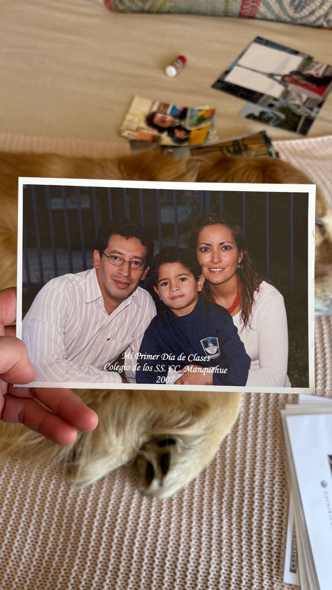
no sabes cuanto los extraño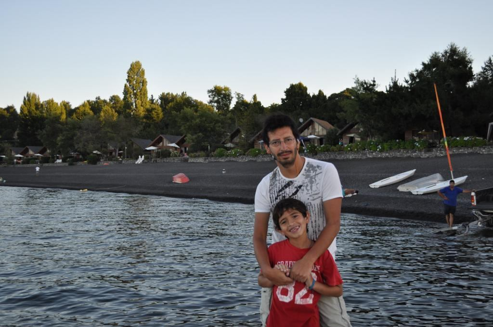
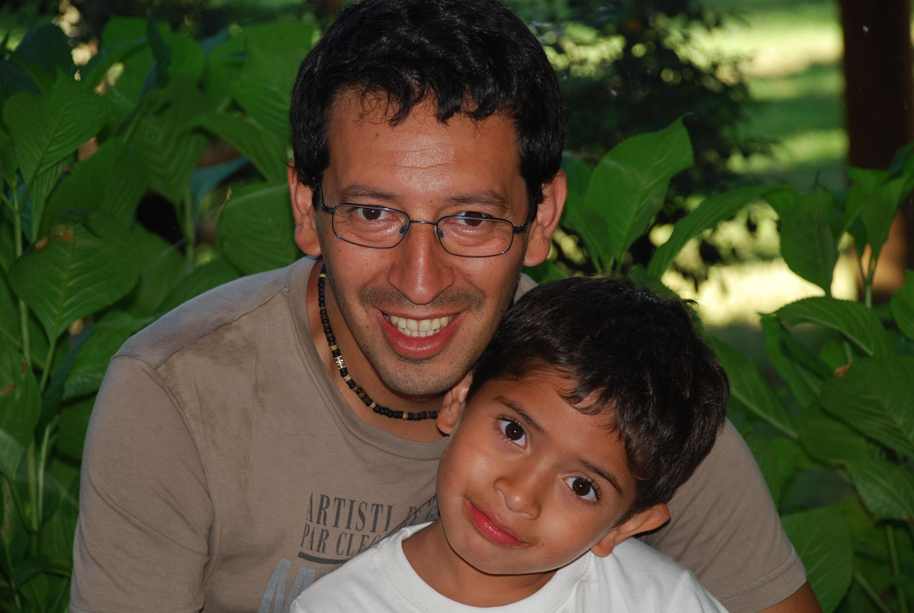
gracias por la tremenda infancia que me dieron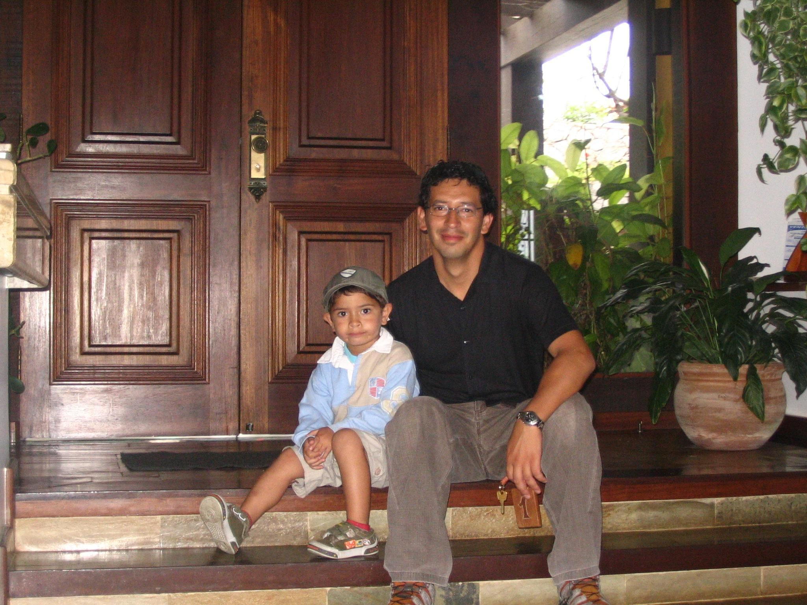
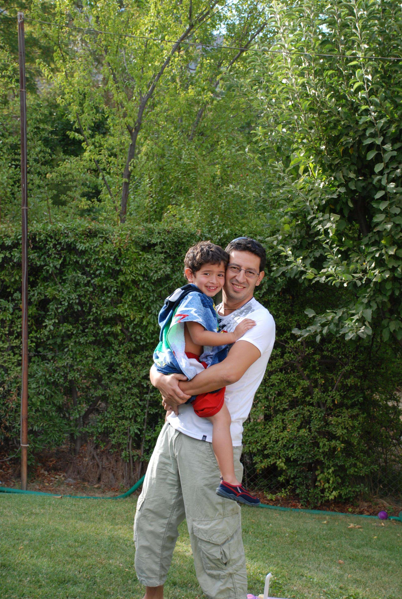
una clásicaEres mi ídolo, papá. No lo digo para llenarte de halagos en tu día. Lo digo en el sentido más concreto y real que tiene esa palabra: eres la persona a la que miro cuando no sé cómo actuar. Cuando tengo miedo. Cuando hay algo difícil por delante y no tengo claro si voy a poder. En esos momentos me pregunto qué harías tú, cómo lo enfrentarías, y eso me ordena. No lo decido conscientemente, no lo planeo. Solo pasa. Te busco como referencia antes de muchas cosas sin que tú lo sepas, y ese reflejo dice todo sobre el tipo de persona que eres.
Hago lo posible por parecerme a ti. Eso tampoco es un cumplido vacío o algo que uno dice por costumbre. Es algo que me propongo en serio, que me sirve de brújula cuando el camino no está muy claro, cuando no sé qué hacer o cómo hacer las cosas. Me parece que nunca te lo había dicho tan directo. Ya tocaba.
Hay frases tuyas que viven permanentemente en mi cabeza. La que más aparece, la que más repito, es esa de nunca decir no puedo. Parece algo simple cuando la escuchas. No lo es. Es una forma de ver el mundo completa. Es decidir no cerrarse antes de intentar, no dejarle espacio al miedo antes de tiempo, no rendirse sin haber pisado ni siquiera la cancha. Y yo la repito, casi sin darme cuenta, en situaciones muy distintas. En la universidad, en el intercambio, en cosas chicas de todos los días. Ya no sé si es tuya o mía, de tanto que la hice propia.
Y después está lo de dibujar sin goma. Eso me marcó de una manera que todavía no termino de entender muy bien. Porque no es una enseñanza sobre dibujar, es sobre comprometerse con lo que uno hace. Es sobre asumir las decisiones, seguir aunque algo salga mal, no volver para atrás por miedo o inseguridad. La vida no tiene goma, y tú me lo enseñaste antes de que yo supiera que lo necesitaba. Cada vez que el instinto me dice borrar todo y empezar de cero, me acuerdo de eso. Y sigo. Con solo esas dos cosas ya me diste más de lo que mucha gente da en toda una vida.
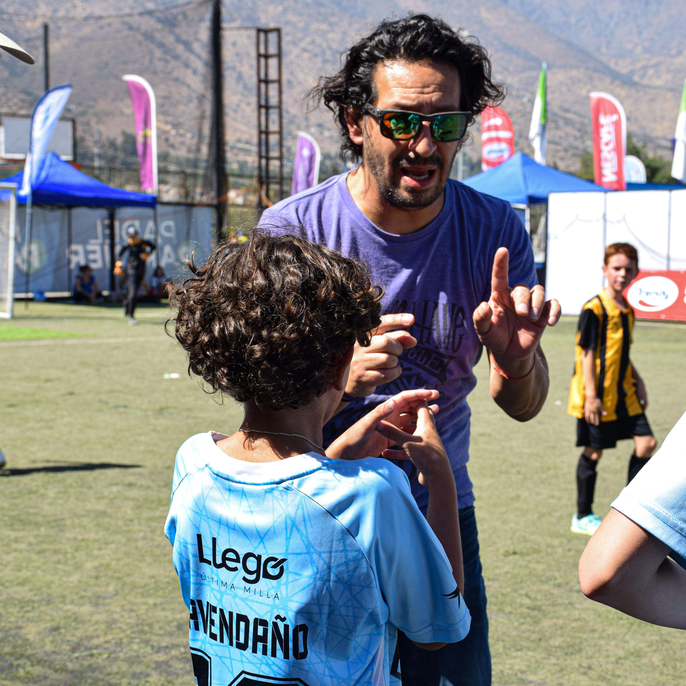
que bueno que yo ya pasé esa etapa jajajaj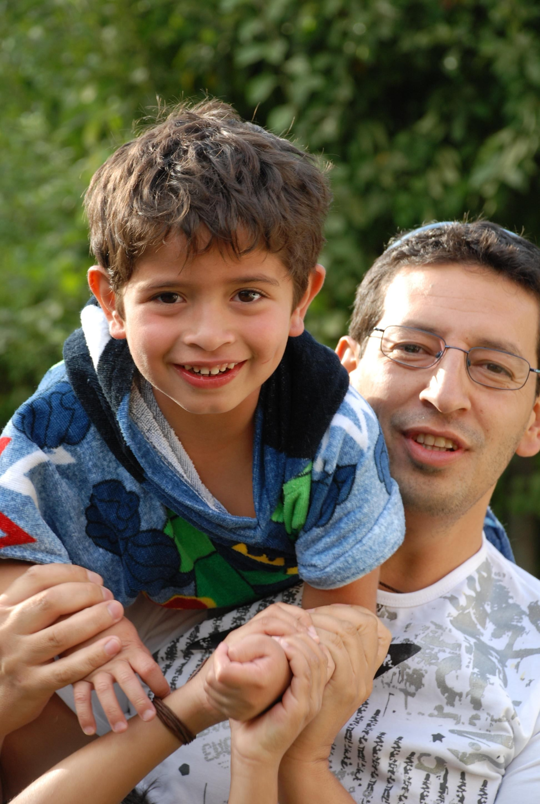
esta foto me da mucha pazHay algo que admiro mucho de ti y que creo no te he dicho lo suficiente: tu mentalidad. La manera en que enfrentas el error, el riesgo, el esfuerzo. Siempre me animaste a probar sin miedo, a no paralizarme si algo podía salir mal, a entender que equivocarse es parte del proceso y no el final del camino. Eso lo aprendí viéndote a ti, mucho antes de entenderlo como concepto, mucho antes de poder ponerlo en palabras.
Esa energía de que se puede, de que hay que insistir, de que las cosas buenas llegan con esfuerzo de verdad y no de casualidad. Cuando algo me pesa, cuando siento ganas de soltar, pienso en cómo lo enfrentarías tú. Y eso me mueve. Siempre lo hace.
Y después está todo lo que haces por nosotros. El esfuerzo que le pones a la familia, a que estemos bien, a que nada falte. Eso se nota, papá. No siempre se dice, pero se nota, y yo lo veo y lo agradezco mucho más de lo que expreso. Lo mismo con la Munch. La manera en que la cuidas, en que la amas, me enseña algo sobre cómo se ve un amor que se elige todos los días, que no se gasta con el tiempo, que no se da por sentado. Es algo que cargo conmigo sin haberlo pedido.
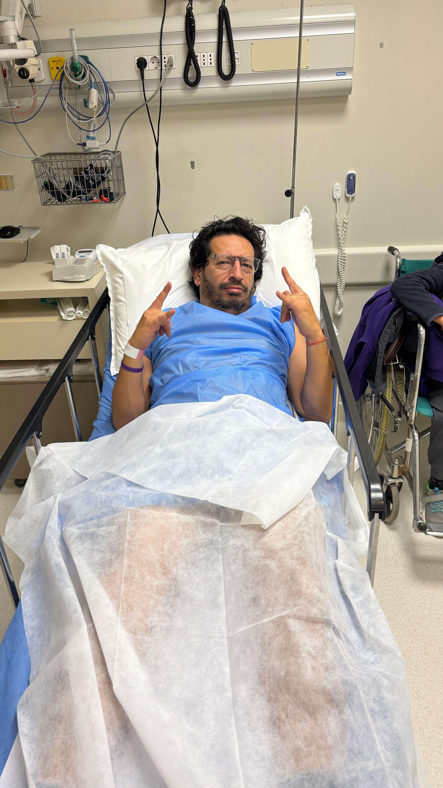
una de tus cuantas alaraqueadas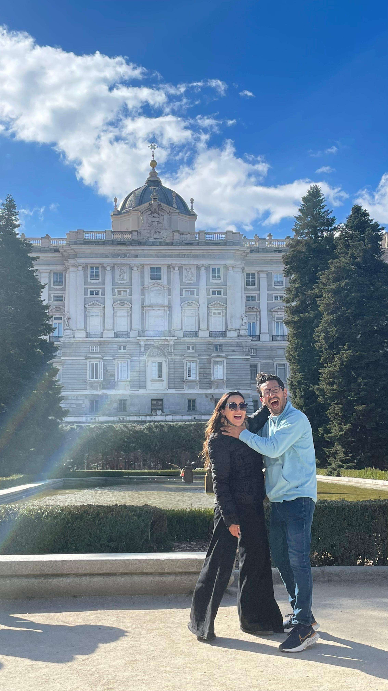
gracias por enseñarme a amar aunque a veces cueste jajaja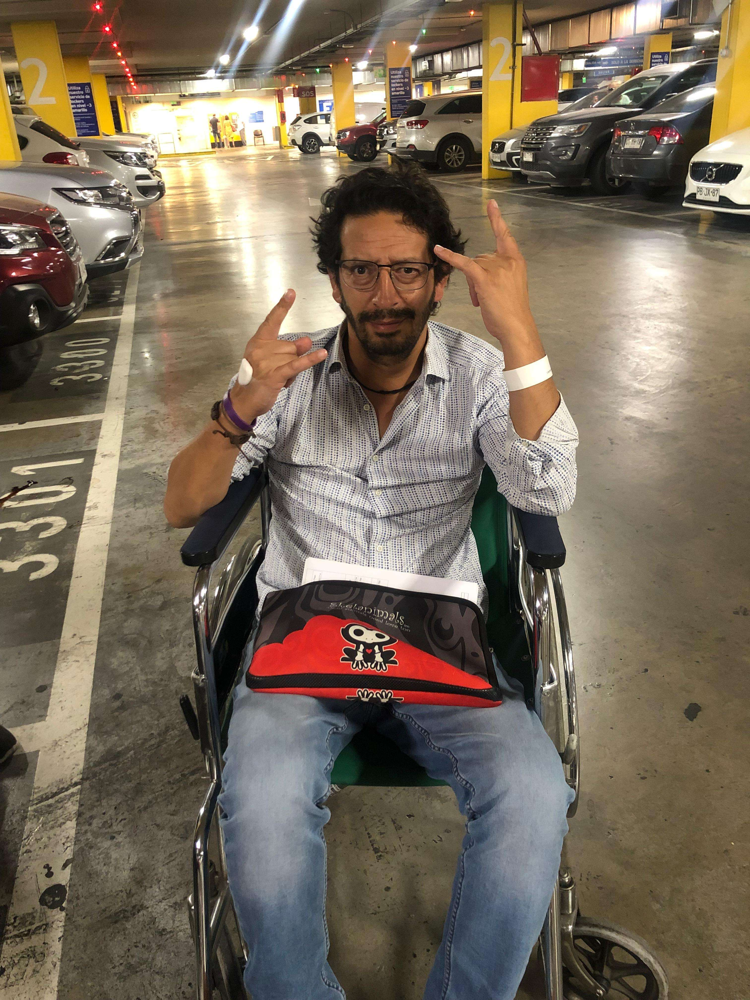
mi foto favorita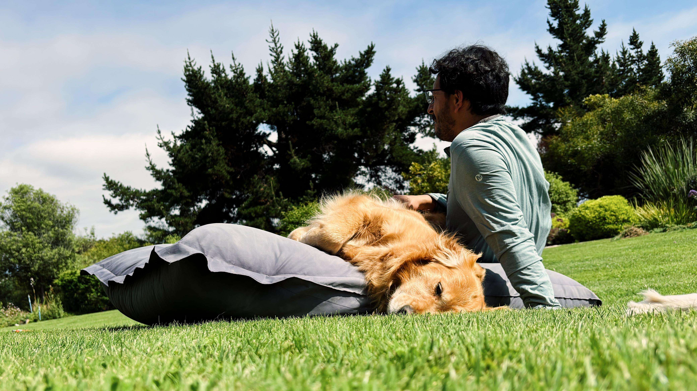
:,)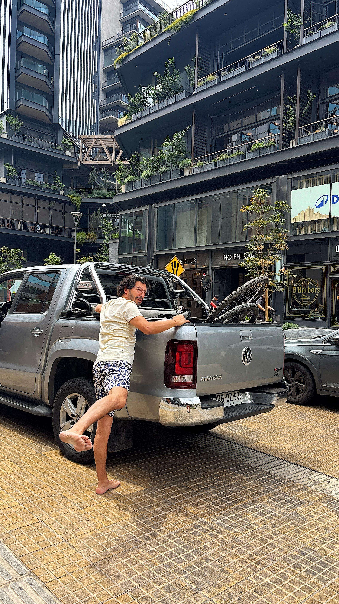
gracias por siempre ser túVenir a Barcelona fue una de las cosas más importantes que me han pasado. Y fue posible, en gran parte, gracias a ti.
Hubo un momento, cuando la fecha se acercaba y el miedo le empezaba a ganar a la emoción, en que dudé de verdad. Una parte de mí quería quedarse, no complicarse, no saltar al vacío. Y tú estuviste ahí para darme ese empujoncito más que necesario. Para acordarme que era algo que yo quería, que me lo había ganado, que iba a poder. Que había que ir. Todavía no sé si entiendes cuánto pesó eso en ese momento, pero de verdad que lo valoré mucho.
Gracias por haberme incentivado a cumplir este sueño. Por haber creído en mí cuando yo mismo tenía dudas. Ese empuje tuyo me permitió vivir algo que me cambió de formas que todavía estoy entendiendo.
Y acá, en el intercambio, también me pasaron cosas que no esperaba. Hubo un período donde no estuve bien. La ansiedad apareció de una manera que no conocía, el insomnio también. Llegaron de sorpresa, en un momento en que estaba solo y lejos de todo lo conocido. En ese momento, sin pensarlo mucho, te llamé a ti.
Lo que hiciste en esas semanas fue enorme. Mucho más de lo que creo que te di a entender entonces. Me ayudaste a literal no hundirme, a encontrar un poco de perspectiva, a no hacer más grande lo que ya se sentía grande. A seguir. Esas conversaciones me sostuvieron de verdad, y estoy muy agradecido por eso. De que seas el papá que eres, del vínculo que tenemos, de que pueda apoyarme en ti con tanta facilidad.
Estar lejos me hizo ver algo que antes no veía tan claro: eres mi pilar. No solo para las cosas grandes. Para todo. Siempre estuvo ahí, pero desde acá, lejos, se me hizo más evidente que nunca.
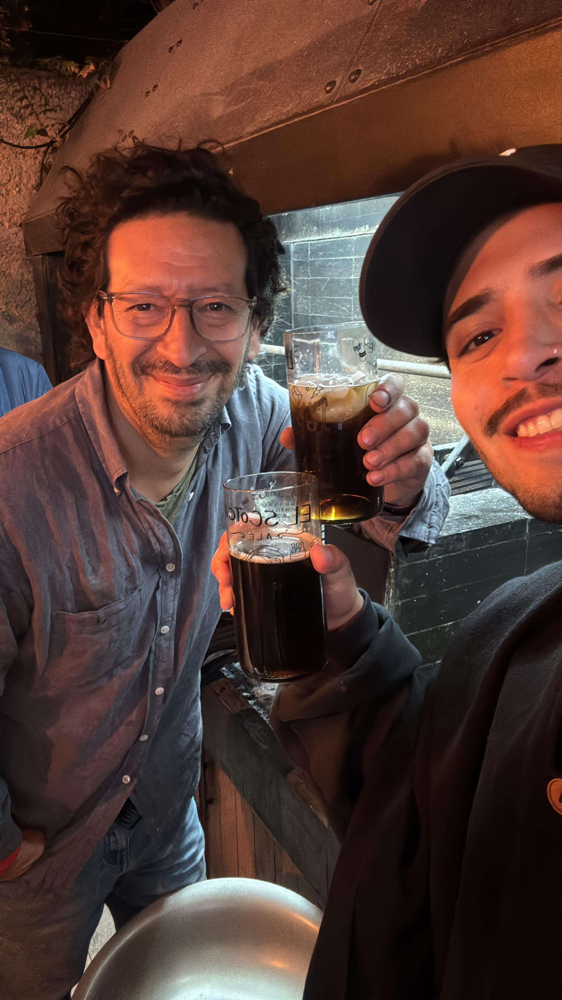
lo que extraño esas piscolitas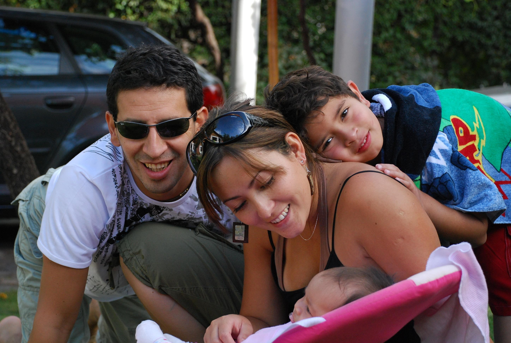
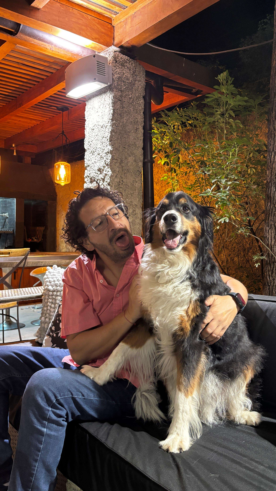
que dupla...Para este año te deseo algo específico: que te preguntes qué es lo que te gusta. No en lo laboral, no como papá, sino tú solo. Qué disfrutas. Qué te conecta y recarga. Qué harías si tuvieras una tarde libre sin que nadie te necesite. Y que lo hagas.
Si es el patio y las plantas, que te des esos momentos de verdad. Que los planifiques, que los cuides, que los disfrutes con calma. Sin culpa, sin apuro. Te lo mereces, papá, y creo que a veces uno se olvida muy fácil de esos momentos para uno, en el medio de tanto.
Vuelvo en agosto. Y tengo muchas ganas de esa chelita con la chorrillana de siempre, de ponernos al día cara a cara, de contarte todo lo que hay en el medio de las llamadas. Esas cosas que no caben en diez minutos pero que importan. Y de escucharte a ti también, hay cosas tuyas que quiero saber y que en las llamadas cortas se quedan sin decirse.
Gracias por todo, papá. Por el esfuerzo constante, por la mentalidad, por el ejemplo de todos los días, por el apoyo, por amar a la Munch como la amas, por ser quien eres.
Te amo mucho. Más de lo que te digo, más de lo que muestro, y desde acá, lejos, lo entiendo más que nunca.
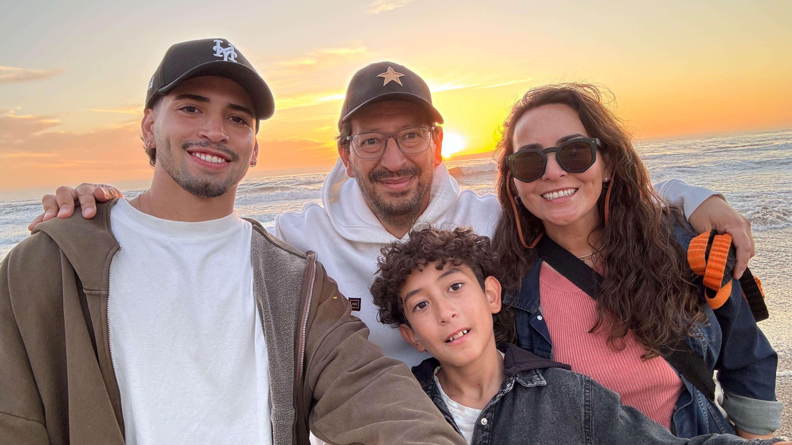
siempre los 4